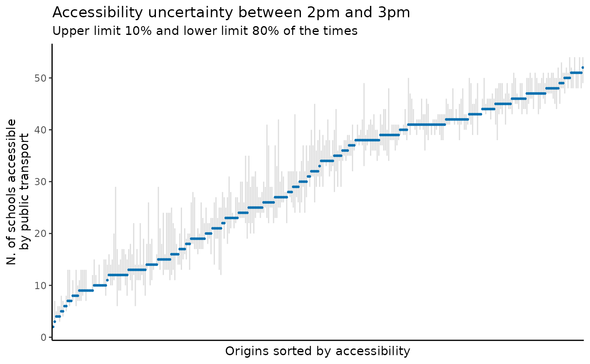

Abstract
This vignette shows how to use and interpret thetime_window parameter in r5r.
1. Introduction
The problem
To calculate the travel time from A to B, or to calculate the
accessibility level at a given location, one has to select a departure
time. However, travel time and accessibility estimates can differ
significantly at different departure times because of how public
transport service levels vary across the day (Stepniak et al. 2019). Even a small difference,
say leaving at 10:00am or 10:04am might
importantly change travel time and accessibility estimates depending on
when a person departs relative to when a public transport vehicle
arrives, and how well transfers are coordinated given a service
timetable. This is a very common issue related to the modifiable
temporal unit problem (MTUP) (Pereira 2019;
Levinson and et al. 2020).
This problem gets even more complicated when public transport GTFS
feeds have a frequencies.txt table. In these cases, we
cannot know the exact departure time of vehicles, what creates greater
uncertainty for our travel time and accessibility estimates (Conway, Byrd, and van Eggermond 2018; Stewart and Byrd
2022).
The solution
A common strategy to overcome this problem is to calculate travel times and accessibilities at multiple departure times sampled over a time window, and then take the average or median value. Now you may ask, but how many departure times should I use? You might also be thinking that doing multiple repeated routing analysis can be cumbersome and take a lot of time. Right?
Here is where r5r comes in. Both the
travel_time_matrix()and accessibility()
functions have a parameter called time_window. When this
parameter is set, R5 will automatically compute multiple
travel times / accessibility estimates considering multiple departures
per minute within the time_window selected by the user.
This vignette shows a reproducible example to explain how one can use
the time_window and interpret the results.
2. How the time_window works and how to interpret the
results.
As mentioned above, when time_window is set,
R5 computes multiple travel times / accessibility estimates
starting at the specified departure_datetime and within the
time_window selected by the user. By default,
r5r will generate one estimate per minute. Nonetheless,
users can set a number to the draws_per_minute parameter
that will change the number of Monte Carlo draws to perform per time
window minute. The default value of draws_per_minute is 5,
which mean 300 draws in a 60 minutes time window, for example. For a
detailed discussion on the effect of number of draws on result
stability, see Stewart et al (2022).
In this case, there isn’t a single estimate of travel time /
accessibility, but a distribution of several estimates that reflect the
travel time / accessibility uncertainties in the specified time window.
To get our heads around so many estimates, we can use the
percentiles parameter to specify the percentiles of the
distribution we are interested in. For example, if we select the 25th
travel time percentile and the results show that the travel time
estimate between A and B is 15 minutes, this means that 25% of all trips
taken between these points within the specified time window are shorter
than 15 minutes.
Let’s see a couple concrete examples now.
3. Demonstration of time_window.
3.1 Build routable transport network with
build_network()
First, let’s build the network and create the routing inputs. In this
example we’ll be using the a sample data set for the city of São Paulo
(Brazil) included in r5r.
# increase Java memory
options(java.parameters = "-Xmx2G")
# load libraries
library(r5r)
library(sf)
library(data.table)
library(ggplot2)
library(dplyr)
# build a routable transport network with r5r
data_path <- system.file("extdata/spo", package = "r5r")
r5r_network <- build_network(data_path)
# routing inputs
mode <- c('walk', 'transit')
max_walk_time <- 30 # minutes
max_trip_duration <- 90 # minutes
# load origin/destination points
points <- fread(file.path(data_path, "spo_hexgrid.csv"))
# departure datetime
departure_datetime = as.POSIXct("13-05-2019 14:00:00",
format = "%d-%m-%Y %H:%M:%S")ps. Please keep in mind that the Monte Carlo draws in
time_window only affects the results when the GTFS feeds
contain a frequencies.txt table. If the GTFS feed does not
have a frequency table, r5r still allow for multiple runs over the set
time_window in a deterministic way.
3.2 Accessibility with time_window.
In this example we calculate the number of schools accessible from
each location within a 60-minute time window departing between 2pm and
3pm. In this example we’ll be using a cumulative accessibility metric
decay_function = "step" with a max time threshold of 45
minutes cutoffs = 45.
# estimate accessibility
acc <- r5r::accessibility(r5r_network,
origins = points,
destinations = points,
opportunities_colnames = 'schools',
mode = mode,
max_walk_time = max_walk_time,
decay_function = "step",
cutoffs = 45,
departure_datetime = departure_datetime,
progress = FALSE,
time_window = 60,
percentiles = c(10, 20, 50, 70, 80)
)
head(acc, n = 10)
#> id opportunity percentile cutoff accessibility
#> <char> <char> <int> <int> <num>
#> 1: 89a8100c603ffff schools 10 45 13
#> 2: 89a8100c603ffff schools 20 45 13
#> 3: 89a8100c603ffff schools 50 45 6
#> 4: 89a8100c603ffff schools 70 45 6
#> 5: 89a8100c603ffff schools 80 45 6
#> 6: 89a8100c617ffff schools 10 45 14
#> 7: 89a8100c617ffff schools 20 45 14
#> 8: 89a8100c617ffff schools 50 45 13
#> 9: 89a8100c617ffff schools 70 45 7
#> 10: 89a8100c617ffff schools 80 45 6This output is in long format, so the first 5 rows show the result for the same origin. In this case, we see that in only 10% of the trips departing from that origin between 2pm and 3pm a person would be able to access up to 111 schools. Meanwhile, 50% of the times she would only access 79 schools. By contrast, the accessibility from the other origin shown in the output above is 0, meaning there are no schools accessible from that location given the max travel time of 45 minutes.
We can use a plot like the one below to visualize this uncertainty in how accessibility levels might vary between 2pm and 3pm depending on the departure time within that 60-minute time window.
# summarize
df <- acc[, .(min_acc = min(accessibility),
median = accessibility[which(percentile == 50)],
max_acc = max(accessibility)), by = id]
# plot
ggplot(data=df) +
geom_linerange(color='gray', alpha=.5, aes(x = reorder(id, median) ,
y=median, ymin=min_acc, ymax=max_acc)) +
geom_point(color='#0570b0', size=.5, aes(x = reorder(id, median), y=median)) +
labs(y='N. of schools accessible\nby public transport', x='Origins sorted by accessibility',
title="Accessibility uncertainty between 2pm and 3pm",
subtitle = 'Upper limit 10% and lower limit 80% of the times') +
theme_classic() +
theme(axis.text.x=element_blank(),
axis.ticks.x=element_blank())
3.3 Travel time matrix with time_window.
Now let’s calculate all-to-all travel time estimates within a 60-minute time window departing between 2pm and 3pm and see how the output looks like.
# estimate travel time matrix
ttm <- travel_time_matrix(r5r_network,
origins = points,
destinations = points,
mode = mode,
max_walk_time = max_walk_time,
max_trip_duration = max_trip_duration,
departure_datetime = departure_datetime,
progress = TRUE,
time_window = 60,
percentiles = c(10, 20, 50, 70, 80)
)
head(ttm, n = 10)
#> from_id to_id travel_time_p10 travel_time_p20
#> <char> <char> <int> <int>
#> 1: 89a8100c603ffff 89a8100c603ffff 0 0
#> 2: 89a8100c603ffff 89a8100c617ffff 13 13
#> 3: 89a8100c603ffff 89a8100c60fffff 6 6
#> 4: 89a8100c603ffff 89a8100c607ffff 11 11
#> 5: 89a8100c603ffff 89a8100c6abffff 20 20
#> 6: 89a8100c603ffff 89a8100c6a3ffff 26 26
#> 7: 89a8100c603ffff 89a8100c677ffff 14 14
#> 8: 89a8100c603ffff 89a8100c63bffff 14 14
#> 9: 89a8100c603ffff 89a8100c633ffff 16 16
#> 10: 89a8100c603ffff 89a8100c6afffff 24 24
#> travel_time_p50 travel_time_p70 travel_time_p80
#> <int> <int> <int>
#> 1: 0 0 0
#> 2: 13 13 13
#> 3: 6 6 6
#> 4: 11 11 11
#> 5: 20 20 20
#> 6: 26 26 26
#> 7: 14 14 14
#> 8: 14 14 14
#> 9: 16 16 16
#> 10: 24 24 24Now let’s look at the 2nd row of the output above. This output tell us that only 10% of the trips between 2pm and 3pm for that origin-destination pair took 39 minutes or less. Meanwhile, 50% of those trips took up tp 45 minutes and 80% of them were 48-minute long or shorter.
The last row in the result above has a few NAs. This
tell us that at least 50% of all simulated trips between 2pm and 3pm for
that origin-destination pair could not be completed because they took
longer than the max_trip_duration we have set (90
minutes).
3.4 Expanded travel time matrix with time_window.
Finally, we can also use the time_window in the
expanded_travel_time_matrix() function. In this case,
though, when the user sets a time_window value, the
expanded_travel_time_matrix() will return the fastest route
alternative departing each minute within the specified time window.
Please note this function can be very memory intensive for large data
sets and time windows.
ettm <- r5r::expanded_travel_time_matrix(r5r_network,
origins = points[1:30,],
destinations = points[31:61,],
mode = mode,
max_walk_time = max_walk_time,
max_trip_duration = max_trip_duration,
departure_datetime = departure_datetime,
progress = FALSE,
time_window = 20)
head(ettm, n = 10)
#> from_id to_id departure_time draw_number routes
#> <char> <char> <char> <int> <char>
#> 1: 89a8100c603ffff 89a8100c28bffff 14:00:00 1 4491-10
#> 2: 89a8100c603ffff 89a8100c28bffff 14:00:00 2 4491-10
#> 3: 89a8100c603ffff 89a8100c28bffff 14:00:00 3 4491-10
#> 4: 89a8100c603ffff 89a8100c28bffff 14:00:00 4 4491-10
#> 5: 89a8100c603ffff 89a8100c28bffff 14:00:00 5 4491-10
#> 6: 89a8100c603ffff 89a8100c28bffff 14:01:00 1 4491-10
#> 7: 89a8100c603ffff 89a8100c28bffff 14:01:00 2 4491-10
#> 8: 89a8100c603ffff 89a8100c28bffff 14:01:00 3 4491-10
#> 9: 89a8100c603ffff 89a8100c28bffff 14:01:00 4 4491-10
#> 10: 89a8100c603ffff 89a8100c28bffff 14:01:00 5 4491-10
#> total_time
#> <num>
#> 1: 50.1
#> 2: 53.2
#> 3: 38.9
#> 4: 43.6
#> 5: 34.3
#> 6: 48.9
#> 7: 47.0
#> 8: 36.5
#> 9: 42.8
#> 10: 43.83.5 Detailed itineraries with time_window.
In the detailed_itineraries() function, the number of
Monte Carlo draws per minute is hardcoded to 1. This means that the
function simulates only one departure per minute within the
time_window. So if you set a time_window of 10
minutes, it would simulate 10 departures, one in each minute. This is
largely because the time_window behaves slightly
differently here.
See, functions like travel_time_matrix() or
accessibility(), for example, return estimates of travel
times or accessibility. In these cases, when we use the
time_window parameter, these functions output selected
percentiles of those values generated based on the distribution of all
estimates that result from the multiple trip simulations.
The detailed_itineraries(), on the other hand, does not
return travel times or accessibility estimates. It returns alternatives
of trip journeys. In this case, when we use the time_window
parameter, the function will return the optimal trip itinerary found
within the time window. It can also return the optimal route along with
multiple sub-optimal journey alternatives found within the time window
if the the user sets shortest_path = FALSE.
obs. Mind you that detailed_itineraries()
cannot be computed for public transport trips if the the network uses a
frequencies-based GTFS feed. In these cases, we suggest using
gtfstools::frequencies_to_stop_times() to create a suitable
feed.
Cleaning up after usage
r5r objects are still allocated to any amount of memory
previously set after they are done with their calculations. In order to
remove an existing r5r object and reallocate the memory it
had been using, we use the stop_r5 function followed by a
call to Java’s garbage collector, as follows:
If you have any suggestions or want to report an error, please visit the package GitHub page.